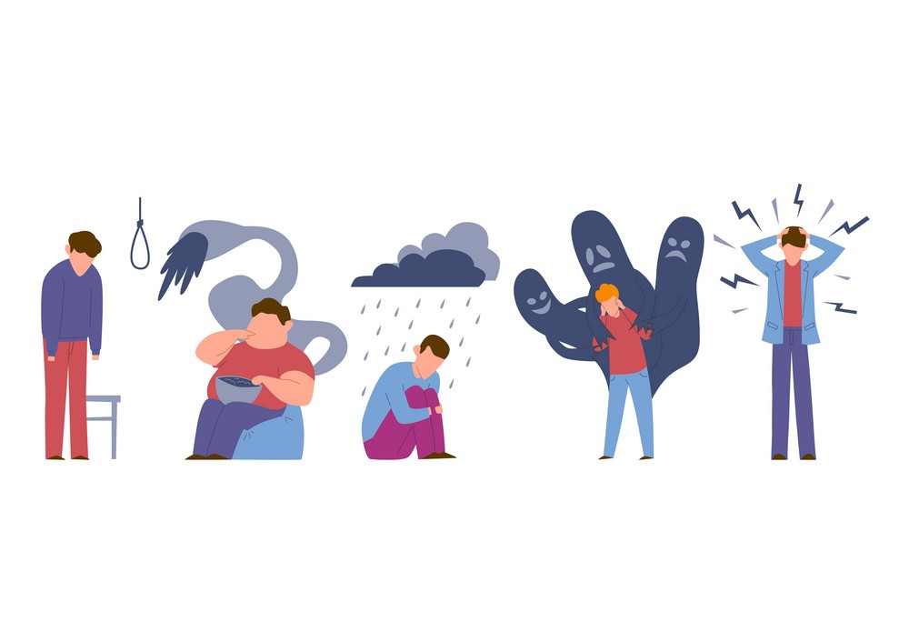

ما هي أكثر الاضطرابات النفسية شيوعا؟
-
الاكتئاب (Depression)
الاكتئاب هو اضطراب نفسي يؤثر على المزاج والعاطفة، ويجعل الشخص يشعر بالحزن العميق وفقدان الاهتمام بالأنشطة اليومية.
الأعراض:
- شعور مستمر بالحزن أو الفراغ.
- فقدان الاهتمام بالأشياء التي كانت ممتعة.
- تعب شديد وفقدان للطاقة.
- اضطرابات في النوم أو الشهية.
- صعوبة في التركيز.
- شعور بالذنب أو العدم القيمة.
-
القلق (Anxiety Disotders)
القلق هو شعور بالخوف والتوتر المستمر، حتى في غياب تهديد حقيقي، وقد يصبح مزمنًا في بعض الأحيان.
الأعراض:
- شعور بالخوف أو التوتر المستمر.
- تسارع ضربات القلب وصعوبة في التنفس.
- دوار وتعرق زائد.
- صعوبة في الاسترخاء.
- التفكير المفرط في المخاوف المستقبلية.
-
الوسواس القهري (OSD)
اضطراب نفسي يتسم بوجود أفكار مقلقة ومتكررة (الوساوس) تؤدي إلى سلوكيات متكررة أو طقوس (القهرية) لتخفيف القلق.
الأعراض:
- أفكار مفرطة ومزعجة لا يمكن السيطرة عليها.
- سلوكيات متكررة (مثل غسل اليدين أو التحقق المستمر).
- الحاجة المفرطة للتنظيم والترتيب.
- الشعور بالقلق عند عدم إتمام الطقوس.
-
انفصام الشخصية (Schizophrenia)
اضطراب عقلي مزمن يؤثر على القدرة على التفكير بشكل منطقي، مما يؤدي إلى فقدان الاتصال بالواقع.
الأعراض:
- هلاوس (مثل سماع أصوات غير موجودة).
- أوهام (معتقدات غير واقعية)
- صعوبة في التفكير بوضوح.
- انخفاض الأداء الوظيفي والاجتماعي.
- انعزال اجتماعي وتراجع في النشاط اليومي.
للتعرف على المزيد عن الأمراض النفسية يمكنك زيارة:
موقع "الصحة النفسية" التابع للمنظمة العالمية للصحة
